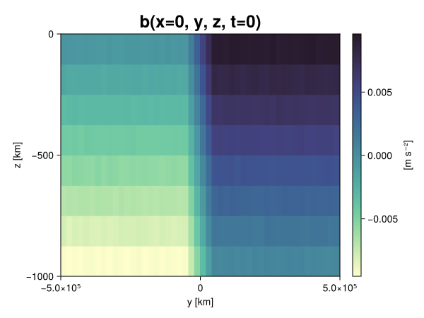
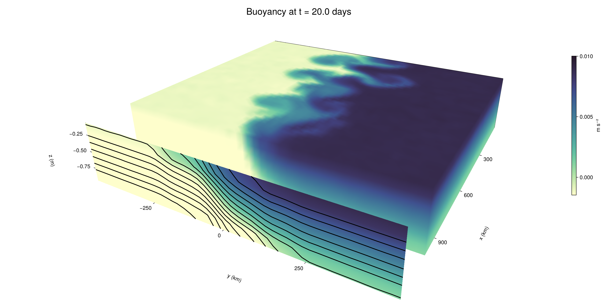

Baroclinic adjustment
In this example, we simulate the evolution and equilibration of a baroclinically unstable front.
Install dependencies
First let's make sure we have all required packages installed.
using Pkg
pkg"add Oceananigans, CairoMakie"using Oceananigans
using Oceananigans.UnitsGrid
We use a three-dimensional channel that is periodic in the x direction:
Lx = 1000kilometers # east-west extent [m]
Ly = 1000kilometers # north-south extent [m]
Lz = 1kilometers # depth [m]
grid = RectilinearGrid(size = (48, 48, 8),
x = (0, Lx),
y = (-Ly/2, Ly/2),
z = (-Lz, 0),
topology = (Periodic, Bounded, Bounded))48×48×8 RectilinearGrid{Float64, Periodic, Bounded, Bounded} on CPU with 3×3×3 halo
├── Periodic x ∈ [0.0, 1.0e6) regularly spaced with Δx=20833.3
├── Bounded y ∈ [-500000.0, 500000.0] regularly spaced with Δy=20833.3
└── Bounded z ∈ [-1000.0, 0.0] regularly spaced with Δz=125.0Model
We built a HydrostaticFreeSurfaceModel with an ImplicitFreeSurface solver. Regarding Coriolis, we use a beta-plane centered at 45° South.
model = HydrostaticFreeSurfaceModel(; grid,
coriolis = BetaPlane(latitude = -45),
buoyancy = BuoyancyTracer(),
tracers = :b,
momentum_advection = WENO(),
tracer_advection = WENO())HydrostaticFreeSurfaceModel{CPU, RectilinearGrid}(time = 0 seconds, iteration = 0)
├── grid: 48×48×8 RectilinearGrid{Float64, Periodic, Bounded, Bounded} on CPU with 3×3×3 halo
├── timestepper: QuasiAdamsBashforth2TimeStepper
├── tracers: b
├── closure: Nothing
├── buoyancy: BuoyancyTracer with ĝ = NegativeZDirection()
├── free surface: ImplicitFreeSurface with gravitational acceleration 9.80665 m s⁻²
│ └── solver: FFTImplicitFreeSurfaceSolver
├── advection scheme:
│ ├── momentum: WENO reconstruction order 5
│ └── b: WENO reconstruction order 5
└── coriolis: BetaPlane{Float64}We start our simulation from rest with a baroclinically unstable buoyancy distribution. We use ramp(y, Δy), defined below, to specify a front with width Δy and horizontal buoyancy gradient M². We impose the front on top of a vertical buoyancy gradient N² and a bit of noise.
"""
ramp(y, Δy)
Linear ramp from 0 to 1 between -Δy/2 and +Δy/2.
For example:
```
y < -Δy/2 => ramp = 0
-Δy/2 < y < -Δy/2 => ramp = y / Δy
y > Δy/2 => ramp = 1
```
"""
ramp(y, Δy) = min(max(0, y/Δy + 1/2), 1)
N² = 1e-5 # [s⁻²] buoyancy frequency / stratification
M² = 1e-7 # [s⁻²] horizontal buoyancy gradient
Δy = 100kilometers # width of the region of the front
Δb = Δy * M² # buoyancy jump associated with the front
ϵb = 1e-2 * Δb # noise amplitude
bᵢ(x, y, z) = N² * z + Δb * ramp(y, Δy) + ϵb * randn()
set!(model, b=bᵢ)Let's visualize the initial buoyancy distribution.
using CairoMakie
# Build coordinates with units of kilometers
x, y, z = 1e-3 .* nodes(grid, (Center(), Center(), Center()))
b = model.tracers.b
fig, ax, hm = heatmap(view(b, 1, :, :),
colormap = :deep,
axis = (xlabel = "y [km]",
ylabel = "z [km]",
title = "b(x=0, y, z, t=0)",
titlesize = 24))
Colorbar(fig[1, 2], hm, label = "[m s⁻²]")
fig
Simulation
Now let's build a Simulation.
simulation = Simulation(model, Δt=20minutes, stop_time=20days)Simulation of HydrostaticFreeSurfaceModel{CPU, RectilinearGrid}(time = 0 seconds, iteration = 0)
├── Next time step: 20 minutes
├── Elapsed wall time: 0 seconds
├── Wall time per iteration: NaN days
├── Stop time: 20 days
├── Stop iteration : Inf
├── Wall time limit: Inf
├── Callbacks: OrderedDict with 4 entries:
│ ├── stop_time_exceeded => Callback of stop_time_exceeded on IterationInterval(1)
│ ├── stop_iteration_exceeded => Callback of stop_iteration_exceeded on IterationInterval(1)
│ ├── wall_time_limit_exceeded => Callback of wall_time_limit_exceeded on IterationInterval(1)
│ └── nan_checker => Callback of NaNChecker for u on IterationInterval(100)
├── Output writers: OrderedDict with no entries
└── Diagnostics: OrderedDict with no entriesWe add a TimeStepWizard callback to adapt the simulation's time-step,
conjure_time_step_wizard!(simulation, IterationInterval(20), cfl=0.2, max_Δt=20minutes)Also, we add a callback to print a message about how the simulation is going,
using Printf
wall_clock = Ref(time_ns())
function print_progress(sim)
u, v, w = model.velocities
progress = 100 * (time(sim) / sim.stop_time)
elapsed = (time_ns() - wall_clock[]) / 1e9
@printf("[%05.2f%%] i: %d, t: %s, wall time: %s, max(u): (%6.3e, %6.3e, %6.3e) m/s, next Δt: %s\n",
progress, iteration(sim), prettytime(sim), prettytime(elapsed),
maximum(abs, u), maximum(abs, v), maximum(abs, w), prettytime(sim.Δt))
wall_clock[] = time_ns()
return nothing
end
add_callback!(simulation, print_progress, IterationInterval(100))Diagnostics/Output
Here, we save the buoyancy, $b$, at the edges of our domain as well as the zonal ($x$) average of buoyancy.
u, v, w = model.velocities
ζ = ∂x(v) - ∂y(u)
B = Average(b, dims=1)
U = Average(u, dims=1)
V = Average(v, dims=1)
filename = "baroclinic_adjustment"
save_fields_interval = 0.5day
slicers = (east = (grid.Nx, :, :),
north = (:, grid.Ny, :),
bottom = (:, :, 1),
top = (:, :, grid.Nz))
for side in keys(slicers)
indices = slicers[side]
simulation.output_writers[side] = JLD2OutputWriter(model, (; b, ζ);
filename = filename * "_$(side)_slice",
schedule = TimeInterval(save_fields_interval),
overwrite_existing = true,
indices)
end
simulation.output_writers[:zonal] = JLD2OutputWriter(model, (; b=B, u=U, v=V);
filename = filename * "_zonal_average",
schedule = TimeInterval(save_fields_interval),
overwrite_existing = true)JLD2OutputWriter scheduled on TimeInterval(12 hours):
├── filepath: baroclinic_adjustment_zonal_average.jld2
├── 3 outputs: (b, u, v)
├── array type: Array{Float64}
├── including: [:grid, :coriolis, :buoyancy, :closure]
├── file_splitting: NoFileSplitting
└── file size: 31.6 KiBNow we're ready to run.
@info "Running the simulation..."
run!(simulation)
@info "Simulation completed in " * prettytime(simulation.run_wall_time)[ Info: Running the simulation...
[ Info: Initializing simulation...
[00.00%] i: 0, t: 0 seconds, wall time: 32.556 seconds, max(u): (0.000e+00, 0.000e+00, 0.000e+00) m/s, next Δt: 20 minutes
[ Info: ... simulation initialization complete (30.917 seconds)
[ Info: Executing initial time step...
[ Info: ... initial time step complete (20.968 seconds).
[06.94%] i: 100, t: 1.389 days, wall time: 41.754 seconds, max(u): (1.369e-01, 1.266e-01, 1.501e-03) m/s, next Δt: 20 minutes
[13.89%] i: 200, t: 2.778 days, wall time: 1.113 seconds, max(u): (2.292e-01, 2.017e-01, 1.804e-03) m/s, next Δt: 20 minutes
[20.83%] i: 300, t: 4.167 days, wall time: 999.463 ms, max(u): (2.960e-01, 2.873e-01, 1.783e-03) m/s, next Δt: 20 minutes
[27.78%] i: 400, t: 5.556 days, wall time: 1.096 seconds, max(u): (3.623e-01, 3.377e-01, 1.797e-03) m/s, next Δt: 20 minutes
[34.72%] i: 500, t: 6.944 days, wall time: 1.107 seconds, max(u): (4.334e-01, 4.078e-01, 1.845e-03) m/s, next Δt: 20 minutes
[41.67%] i: 600, t: 8.333 days, wall time: 1.183 seconds, max(u): (5.042e-01, 5.710e-01, 2.084e-03) m/s, next Δt: 20 minutes
[48.61%] i: 700, t: 9.722 days, wall time: 1.184 seconds, max(u): (6.729e-01, 8.570e-01, 3.419e-03) m/s, next Δt: 20 minutes
[55.56%] i: 800, t: 11.111 days, wall time: 1.085 seconds, max(u): (1.084e+00, 1.130e+00, 3.808e-03) m/s, next Δt: 20 minutes
[62.50%] i: 900, t: 12.500 days, wall time: 1.046 seconds, max(u): (1.267e+00, 1.124e+00, 5.741e-03) m/s, next Δt: 20 minutes
[69.44%] i: 1000, t: 13.889 days, wall time: 1.084 seconds, max(u): (1.450e+00, 1.200e+00, 4.283e-03) m/s, next Δt: 20 minutes
[76.39%] i: 1100, t: 15.278 days, wall time: 1.080 seconds, max(u): (1.342e+00, 1.178e+00, 3.577e-03) m/s, next Δt: 20 minutes
[83.33%] i: 1200, t: 16.667 days, wall time: 1.117 seconds, max(u): (1.307e+00, 1.171e+00, 3.450e-03) m/s, next Δt: 20 minutes
[90.28%] i: 1300, t: 18.056 days, wall time: 1.080 seconds, max(u): (1.363e+00, 1.343e+00, 3.253e-03) m/s, next Δt: 20 minutes
[97.22%] i: 1400, t: 19.444 days, wall time: 1.047 seconds, max(u): (1.316e+00, 1.175e+00, 3.432e-03) m/s, next Δt: 20 minutes
[ Info: Simulation is stopping after running for 1.185 minutes.
[ Info: Simulation time 20 days equals or exceeds stop time 20 days.
[ Info: Simulation completed in 1.186 minutes
Visualization
All that's left is to make a pretty movie. Actually, we make two visualizations here. First, we illustrate how to make a 3D visualization with Makie's Axis3 and Makie.surface. Then we make a movie in 2D. We use CairoMakie in this example, but note that using GLMakie is more convenient on a system with OpenGL, as figures will be displayed on the screen.
using CairoMakieThree-dimensional visualization
We load the saved buoyancy output on the top, north, and east surface as FieldTimeSerieses.
filename = "baroclinic_adjustment"
sides = keys(slicers)
slice_filenames = NamedTuple(side => filename * "_$(side)_slice.jld2" for side in sides)
b_timeserieses = (east = FieldTimeSeries(slice_filenames.east, "b"),
north = FieldTimeSeries(slice_filenames.north, "b"),
top = FieldTimeSeries(slice_filenames.top, "b"))
B_timeseries = FieldTimeSeries(filename * "_zonal_average.jld2", "b")
times = B_timeseries.times
grid = B_timeseries.grid48×48×8 RectilinearGrid{Float64, Periodic, Bounded, Bounded} on CPU with 3×3×3 halo
├── Periodic x ∈ [0.0, 1.0e6) regularly spaced with Δx=20833.3
├── Bounded y ∈ [-500000.0, 500000.0] regularly spaced with Δy=20833.3
└── Bounded z ∈ [-1000.0, 0.0] regularly spaced with Δz=125.0We build the coordinates. We rescale horizontal coordinates to kilometers.
xb, yb, zb = nodes(b_timeserieses.east)
xb = xb ./ 1e3 # convert m -> km
yb = yb ./ 1e3 # convert m -> km
Nx, Ny, Nz = size(grid)
x_xz = repeat(x, 1, Nz)
y_xz_north = y[end] * ones(Nx, Nz)
z_xz = repeat(reshape(z, 1, Nz), Nx, 1)
x_yz_east = x[end] * ones(Ny, Nz)
y_yz = repeat(y, 1, Nz)
z_yz = repeat(reshape(z, 1, Nz), grid.Ny, 1)
x_xy = x
y_xy = y
z_xy_top = z[end] * ones(grid.Nx, grid.Ny)Then we create a 3D axis. We use zonal_slice_displacement to control where the plot of the instantaneous zonal average flow is located.
fig = Figure(size = (1600, 800))
zonal_slice_displacement = 1.2
ax = Axis3(fig[2, 1],
aspect=(1, 1, 1/5),
xlabel = "x (km)",
ylabel = "y (km)",
zlabel = "z (m)",
xlabeloffset = 100,
ylabeloffset = 100,
zlabeloffset = 100,
limits = ((x[1], zonal_slice_displacement * x[end]), (y[1], y[end]), (z[1], z[end])),
elevation = 0.45,
azimuth = 6.8,
xspinesvisible = false,
zgridvisible = false,
protrusions = 40,
perspectiveness = 0.7)Axis3()We use data from the final savepoint for the 3D plot. Note that this plot can easily be animated by using Makie's Observable. To dive into Observables, check out Makie.jl's Documentation.
n = length(times)41Now let's make a 3D plot of the buoyancy and in front of it we'll use the zonally-averaged output to plot the instantaneous zonal-average of the buoyancy.
b_slices = (east = interior(b_timeserieses.east[n], 1, :, :),
north = interior(b_timeserieses.north[n], :, 1, :),
top = interior(b_timeserieses.top[n], :, :, 1))
# Zonally-averaged buoyancy
B = interior(B_timeseries[n], 1, :, :)
clims = 1.1 .* extrema(b_timeserieses.top[n][:])
kwargs = (colorrange=clims, colormap=:deep, shading=NoShading)
surface!(ax, x_yz_east, y_yz, z_yz; color = b_slices.east, kwargs...)
surface!(ax, x_xz, y_xz_north, z_xz; color = b_slices.north, kwargs...)
surface!(ax, x_xy, y_xy, z_xy_top; color = b_slices.top, kwargs...)
sf = surface!(ax, zonal_slice_displacement .* x_yz_east, y_yz, z_yz; color = B, kwargs...)
contour!(ax, y, z, B; transformation = (:yz, zonal_slice_displacement * x[end]),
levels = 15, linewidth = 2, color = :black)
Colorbar(fig[2, 2], sf, label = "m s⁻²", height = Relative(0.4), tellheight=false)
title = "Buoyancy at t = " * string(round(times[n] / day, digits=1)) * " days"
fig[1, 1:2] = Label(fig, title; fontsize = 24, tellwidth = false, padding = (0, 0, -120, 0))
rowgap!(fig.layout, 1, Relative(-0.2))
colgap!(fig.layout, 1, Relative(-0.1))
save("baroclinic_adjustment_3d.png", fig)
Two-dimensional movie
We make a 2D movie that shows buoyancy $b$ and vertical vorticity $ζ$ at the surface, as well as the zonally-averaged zonal and meridional velocities $U$ and $V$ in the $(y, z)$ plane. First we load the FieldTimeSeries and extract the additional coordinates we'll need for plotting
ζ_timeseries = FieldTimeSeries(slice_filenames.top, "ζ")
U_timeseries = FieldTimeSeries(filename * "_zonal_average.jld2", "u")
B_timeseries = FieldTimeSeries(filename * "_zonal_average.jld2", "b")
V_timeseries = FieldTimeSeries(filename * "_zonal_average.jld2", "v")
xζ, yζ, zζ = nodes(ζ_timeseries)
yv = ynodes(V_timeseries)
xζ = xζ ./ 1e3 # convert m -> km
yζ = yζ ./ 1e3 # convert m -> km
yv = yv ./ 1e3 # convert m -> km49-element Vector{Float64}:
-500.0
-479.1666666666667
-458.3333333333333
-437.5
-416.6666666666667
-395.8333333333333
-375.0
-354.1666666666667
-333.3333333333333
-312.5
-291.6666666666667
-270.8333333333333
-250.0
-229.16666666666666
-208.33333333333334
-187.5
-166.66666666666666
-145.83333333333334
-125.0
-104.16666666666667
-83.33333333333333
-62.5
-41.666666666666664
-20.833333333333332
0.0
20.833333333333332
41.666666666666664
62.5
83.33333333333333
104.16666666666667
125.0
145.83333333333334
166.66666666666666
187.5
208.33333333333334
229.16666666666666
250.0
270.8333333333333
291.6666666666667
312.5
333.3333333333333
354.1666666666667
375.0
395.8333333333333
416.6666666666667
437.5
458.3333333333333
479.1666666666667
500.0Next, we set up a plot with 4 panels. The top panels are large and square, while the bottom panels get a reduced aspect ratio through rowsize!.
set_theme!(Theme(fontsize=24))
fig = Figure(size=(1800, 1000))
axb = Axis(fig[1, 2], xlabel="x (km)", ylabel="y (km)", aspect=1)
axζ = Axis(fig[1, 3], xlabel="x (km)", ylabel="y (km)", aspect=1, yaxisposition=:right)
axu = Axis(fig[2, 2], xlabel="y (km)", ylabel="z (m)")
axv = Axis(fig[2, 3], xlabel="y (km)", ylabel="z (m)", yaxisposition=:right)
rowsize!(fig.layout, 2, Relative(0.3))To prepare a plot for animation, we index the timeseries with an Observable,
n = Observable(1)
b_top = @lift interior(b_timeserieses.top[$n], :, :, 1)
ζ_top = @lift interior(ζ_timeseries[$n], :, :, 1)
U = @lift interior(U_timeseries[$n], 1, :, :)
V = @lift interior(V_timeseries[$n], 1, :, :)
B = @lift interior(B_timeseries[$n], 1, :, :)Observable([-0.009367460906349316 -0.00814573943909429 -0.006867210404593015 -0.005651193657283118 -0.004378070932905528 -0.0031248620377519634 -0.0018594267517016768 -0.0006283755436537344; -0.009384543898882705 -0.008119829605291843 -0.006872310871330483 -0.00561207488502347 -0.004355276525394815 -0.0031277197950979664 -0.0018733779362067953 -0.0006159445551852322; -0.009366232902981992 -0.00813463381749792 -0.006871554744765404 -0.005610506628906626 -0.004374466446370451 -0.0031294322091734265 -0.001884467413649833 -0.0006436660827603668; -0.00937213832129108 -0.008119999792278612 -0.00688682332654823 -0.005619977740637741 -0.0043951174956224906 -0.003104427535649996 -0.0018601258670813915 -0.000634995645136477; -0.009350414149963486 -0.008132516912666164 -0.006854375197773119 -0.00562221955774835 -0.004392342296581058 -0.0031305691550968027 -0.0018698096905783088 -0.000627919724451696; -0.009379802625421527 -0.008118525461437369 -0.006868170601548002 -0.0056242216869703265 -0.004386090543499495 -0.0031155300162669917 -0.0018638256208926881 -0.0006056830488044741; -0.00936475927472723 -0.008118801942865092 -0.006864419171955276 -0.00563923974606659 -0.004395500892473583 -0.003141956391489806 -0.001877246843014566 -0.0006331240842429846; -0.009388715021321362 -0.008124558259182223 -0.00686472501275022 -0.00562003204835914 -0.0043558469202110255 -0.0031217173757960917 -0.0019020903859659803 -0.0006232256397501918; -0.009401371751216326 -0.008148656163969021 -0.006871174058418465 -0.005601703867654298 -0.0043613186829776635 -0.003114484368317383 -0.00188495144806984 -0.0006314876246877322; -0.009367138133615158 -0.008127396057049258 -0.006868422432690822 -0.005656025601590425 -0.004373190358955256 -0.0031298201837027806 -0.001875291092253987 -0.0006438833754347555; -0.009386230003436295 -0.008114286076583583 -0.0068617763741356495 -0.005631927703795264 -0.004367646504024261 -0.0031331806708096953 -0.0018735845070599324 -0.0006371173173806312; -0.009389082654059315 -0.0081137319100429 -0.00687020856345713 -0.005629026736050906 -0.004348818149764497 -0.0030869322288731814 -0.0018843473437064554 -0.0006366835926919064; -0.009355825699732563 -0.008131337869585276 -0.0068482275196513785 -0.005620471551796587 -0.004370876048579345 -0.003127678609738408 -0.0018657896403203448 -0.0006436526618442034; -0.009373184199177024 -0.008125342883488288 -0.006893897106177373 -0.005634303160571385 -0.004396771428714356 -0.0031173620524199155 -0.001901292842625246 -0.0006243385430021502; -0.00939349178342049 -0.008123882153236719 -0.006870120784392406 -0.0056166700539034995 -0.004391718112197774 -0.003134563552176598 -0.0018792072872232106 -0.0006443980170934637; -0.00938497235469733 -0.008143171684918 -0.0068831314695272 -0.005642750178331056 -0.0043810432213315315 -0.0031557343965680986 -0.0018930006552188808 -0.0006237700588858089; -0.009360554621206269 -0.008142159715793832 -0.006868652168744896 -0.005608657491855782 -0.004379862577712418 -0.0031364038581559103 -0.001861142901823323 -0.000626233599510661; -0.009393104012766029 -0.008121474007774675 -0.0068868838067034435 -0.005638859222723123 -0.0043518309505085175 -0.003137256061040252 -0.0018517865761992786 -0.0006415673012231592; -0.00936650783594814 -0.008099179294242592 -0.006873208586629776 -0.005643766864288528 -0.00436210951381438 -0.0031238628647379638 -0.0018762251878121875 -0.0006060573059294382; -0.009387286671043564 -0.008170416342669446 -0.006861952843781688 -0.005622002816695376 -0.004378224218190022 -0.003110477866658809 -0.0018619724882083172 -0.0006245774703167438; -0.009357894486312688 -0.008137610892304149 -0.006868100044492051 -0.005616950035141996 -0.0043959905645945185 -0.0031242892106883684 -0.0018843919059445774 -0.0006129490264041351; -0.009331374870108045 -0.008115468295493972 -0.006881378366694291 -0.005634559671218504 -0.004377162287324227 -0.003116293622433866 -0.0018798624130101575 -0.0006140130811114946; -0.00750485396128469 -0.006288191552080685 -0.005008419703676736 -0.003742339821549186 -0.0025058734727701625 -0.001246572037633414 7.1007407618173305e-6 0.0012301556982835127; -0.005408489048089541 -0.0041662977854694 -0.0028891071365445067 -0.0016849270140232098 -0.0004208996472752735 0.0008327689675505234 0.0020700707580307183 0.0033379317309168814; -0.003303643624488123 -0.002080181518555817 -0.0008359978490963117 0.0004309494212732994 0.0016687256082646717 0.002898419290380741 0.0041677490395727835 0.005412291607294534; -0.0012386601043790993 2.0306785256445018e-5 0.0012623633980545898 0.002504974440216403 0.0037384143643601625 0.005024617221659097 0.006243413296590494 0.0075250191168594605; 0.0006320247866454424 0.0018795903252129707 0.0031208050984363515 0.004375632835738344 0.005639844014689117 0.006855168419185836 0.008139860475535016 0.009377718875033365; 0.0006040941014719531 0.00187739922748698 0.0031283594578549317 0.004383354114196682 0.005590018695732461 0.006887172331037329 0.008108821911257579 0.00935485613620636; 0.0006541487416613939 0.0018828029956529304 0.003115270802223765 0.004383388872708753 0.00563856208981222 0.006882498132874705 0.008124366342024117 0.009358287510278751; 0.0006281836047399575 0.0018506380701146302 0.003126179315930741 0.004406830041883584 0.005622863867877887 0.00688634612584368 0.008123285316081865 0.009398845986717625; 0.0006098205633745833 0.0018699623505268378 0.003124305247480403 0.004396400153466389 0.005608984052040804 0.006889212743576501 0.008110720975820196 0.009370794362017836; 0.0006229417641503194 0.0018802163895532459 0.0031192874802365607 0.0043969369994794035 0.005602494798315406 0.006874128556008802 0.008111721404489234 0.009332909941222526; 0.000640014313132189 0.0018886108655818386 0.0031165104188240135 0.004370379411192528 0.005626824990236163 0.0068702103337640935 0.008113273986646746 0.00935606000412303; 0.0006250281699141917 0.0018605919036294993 0.0031115497823393963 0.004377631794030684 0.005606108357668131 0.006864855674710271 0.00809565818532105 0.009414891150470043; 0.0006270462925691653 0.001884503316811383 0.0030980817572148337 0.004379782591239965 0.005624239641754753 0.006885292734915394 0.008120292179631313 0.009370809731679605; 0.0006023309200492163 0.0018497032607166343 0.0031286134062819284 0.004364619278653883 0.005612946039900772 0.0068986749109741724 0.008123435902481988 0.009370325006115126; 0.0006406888939399213 0.0018847490452635533 0.003139559046499423 0.004374260375614854 0.0056426284072440295 0.006857929481442025 0.008128885656895103 0.009385897166954057; 0.0006158842985368962 0.0018595911011483098 0.003120865703074578 0.004357661348694769 0.0056575042873220375 0.006887732521648284 0.008114869449080294 0.009371881980434685; 0.0006191486893385182 0.0018773622337966364 0.0031178467924056204 0.004390979803113212 0.00563617870993816 0.006878685409649639 0.008109640764697444 0.009385790129278412; 0.0006481130348631382 0.001866359817798019 0.0031265341959545354 0.004397705386357624 0.005635533381946559 0.006871212828243306 0.008120817372421414 0.009367694535604397; 0.0006381812417423767 0.0018761572763948773 0.003132460832594304 0.004374291294183311 0.005634205548502247 0.00688884981301145 0.00809261339996565 0.009365155314902448; 0.000620490261279802 0.001861357342628729 0.0031773135016249787 0.004393256715881782 0.005582663531899776 0.006899912288648442 0.008108054307917082 0.00936147096891502; 0.0006189773009356516 0.001899884529609538 0.003137577371633176 0.004368380305280692 0.005625254719442895 0.0068879574254834585 0.008116683944433515 0.009373373808497449; 0.0006457743574100938 0.001887615400537762 0.0031041402232381116 0.004366996628629333 0.005616173420745825 0.00686268899296288 0.008121607488439648 0.009382795164200626; 0.0006300693554209596 0.001885231346237536 0.0031350024137335127 0.004381736818874237 0.005652416227571971 0.006887639793033481 0.008111216659981602 0.009353419061491626; 0.0006301058598767455 0.0018811241924691902 0.003134704352819583 0.004355755641918912 0.005638583111217311 0.0068808281065299405 0.008108367589663787 0.009364825576572392; 0.0006285435196260863 0.001854047584633917 0.003099445767473272 0.004393062612869075 0.005605702628046406 0.006882137312279826 0.008143147617008257 0.009371289144269261; 0.0006203834934959094 0.00187423478211079 0.00312672797147406 0.00439225417701723 0.005613001574810778 0.006869794620861752 0.008139554890550148 0.00936697362399441])
and then build our plot:
hm = heatmap!(axb, xb, yb, b_top, colorrange=(0, Δb), colormap=:thermal)
Colorbar(fig[1, 1], hm, flipaxis=false, label="Surface b(x, y) (m s⁻²)")
hm = heatmap!(axζ, xζ, yζ, ζ_top, colorrange=(-5e-5, 5e-5), colormap=:balance)
Colorbar(fig[1, 4], hm, label="Surface ζ(x, y) (s⁻¹)")
hm = heatmap!(axu, yb, zb, U; colorrange=(-5e-1, 5e-1), colormap=:balance)
Colorbar(fig[2, 1], hm, flipaxis=false, label="Zonally-averaged U(y, z) (m s⁻¹)")
contour!(axu, yb, zb, B; levels=15, color=:black)
hm = heatmap!(axv, yv, zb, V; colorrange=(-1e-1, 1e-1), colormap=:balance)
Colorbar(fig[2, 4], hm, label="Zonally-averaged V(y, z) (m s⁻¹)")
contour!(axv, yb, zb, B; levels=15, color=:black)Finally, we're ready to record the movie.
frames = 1:length(times)
record(fig, filename * ".mp4", frames, framerate=8) do i
n[] = i
endThis page was generated using Literate.jl.